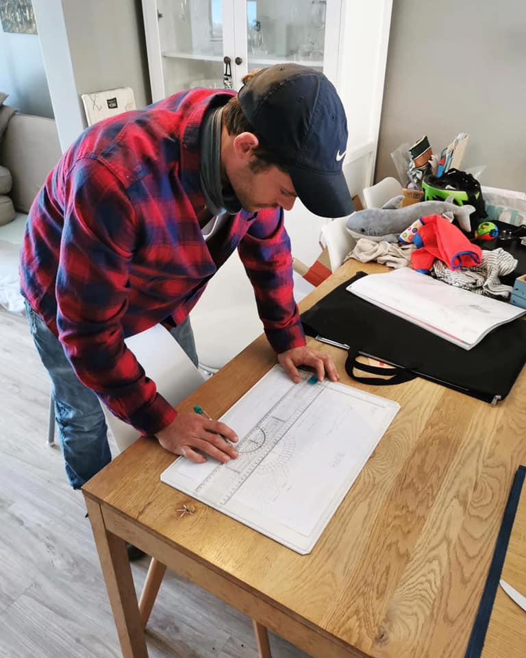

Emergency plumbing
A plumbing emergency can damage floors, walls and fittings quickly.
View serviceCape Town · Available 24/7
Reliable plumbing repairs, geyser services, blocked drains, leak detection and installations for Cape Town homes and businesses—with clear communication and free quotes.

What we fix
From a leak that cannot wait to a bathroom upgrade that needs careful planning, Bulldog brings the same clear, practical approach.
A plumbing emergency can damage floors, walls and fittings quickly.
View serviceNo hot water, a dripping overflow or water around the geyser can signal several different faults.
View serviceSlow water, bad smells and gurgling pipes are often early warnings of a drain problem.
View serviceNot every leak is visible.
View serviceA burst or split pipe needs fast attention.
View servicePersistent odours, wastewater backups and repeated blockages can point to a problem beyond a simple fixture blockage.
View serviceUrgent problem?
If safe, close the main water shut-off valve to limit damage from an active leak.
Do not touch wet plugs, fittings or the distribution board. Move people away from the area.
Describe the fault and your suburb. Send photos on WhatsApp if it is safe to take them.
The Bulldog standard
Plumbing problems are stressful enough. Our job is to explain what is happening, keep you informed and complete the work with care.
Local coverage
We provide plumbing call-outs across Cape Town, with a strong local focus on the Southern Suburbs. Send your address when booking so we can confirm coverage.
Straight answers
Yes. Bulldog Plumbing offers 24/7 plumbing service in Cape Town, including weekends and after-hours at no added after-hours cost.
Services include emergency plumbing, geyser repairs, burst pipes, blocked drains, leak detection, sewer and drain work, bathroom plumbing and commercial plumbing.
Yes. Call or send the job details and photos on WhatsApp to request a free quote. Some work may require an on-site assessment before the scope can be confirmed.
Bulldog Plumbing is based in Dreyersdal and serves Cape Town, with a strong local focus on the Southern Suburbs. Contact the team to confirm coverage for your address.
Let’s sort it out
Tell us what is happening and where you are. Photos are welcome if the area is safe.